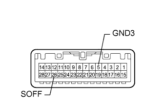

ПРОТИВОУГОННАЯ СИСТЕМА > Цепь выключателя датчика проникновения |
| 1.СНИМИТЕ ПОКАЗАНИЯ ПОРТАТИВНОГО ДИАГНОСТИЧЕСКОГО ПРИБОРА (ДЛЯ ВЫКЛЮЧАТЕЛЯ ДАТЧИКА ПРОНИКНОВЕНИЯ) |
Считайте данные в режиме "Data List" портативного диагностического прибора (Нажмите здесь).
| Информация на дисплее прибора | Измеряемая величина / диапазон измерения | Нормальное состояние | Замечание по диагностике |
| Intrusion Sens OFF SW | Выключатель датчика проникновения / ON (ВКЛ) или OFF (ВЫКЛ) | ON (ВКЛ): Выключатель датчика проникновения нажат OFF (ВЫКЛ): Выключатель датчика проникновения не нажат | - |
|
| ||||
| OK | ||
| ||
| 2.ПРОВЕРЬТЕ ЛАМПУ ИНДИВИДУАЛЬНОГО ОСВЕЩЕНИЯ В СБОРЕ (ВЫКЛЮЧАТЕЛЬ ДАТЧИКА ПРОНИКНОВЕНИЯ) |
|  |
Снимите лампу индивидуального освещения (Нажмите здесь).
Измерьте сопротивление в соответствии со значениями, приведенными в таблице ниже.
| Контакты для подключения диагностического прибора | Положение переключателя | Заданные условия |
| 5 (GND3) - 26 (SOFF) | Выключатель датчика проникновения нажат | Менее 1 Ом |
| 5 (GND3) - 26 (SOFF) | Выключатель датчика проникновения не нажат | 10 кОм или более |
|
| ||||
| OK | |
| 3.ПРОВЕРЬТЕ ЖГУТ ПРОВОДОВ И РАЗЪЕМ (ЛАМПА ИНДИВИДУАЛЬНОГО ОСВЕЩЕНИЯ - ГЛАВНЫЙ ЭБУ КУЗОВА И МАССА) |
Отсоедините разъем W7 лампы.
Отсоедините разъем G64 ЭБУ.
Измерьте сопротивление в соответствии со значениями, приведенными в таблице ниже.
| Контакты для подключения диагностического прибора | Условие | Заданные условия |
| W7-26 (SOFF) - G64-23 (SSW1) | Всегда | Менее 1 Ом |
| W7-26 (SOFF) или G64-23 (SSW1) - масса | Всегда | 10 кОм или более |
| W7-5 (GND3) - масса | Всегда | Менее 1 Ом |
|
| ||||
| OK | ||
| ||